맥적 전주본점
전북특별자치도 전주시 완산구 홍산북로 60-22 1층 101호 (효자동3가)
- 월16:00–03:00
- 화16:00–03:00
- 수16:00–04:00
- 목16:00–04:00
- 금16:00–04:00
- 토16:00–04:00
- 일16:00–01:00
공휴일 17:00–04:00 · 라스트오더는 마감 1시간 전
- 주차
- 자체 주차 공간 없음, 홍산라이브 공영주차장 1시간 무료 지원
- 편의
- 예약 가능 · 남녀 화장실 분리
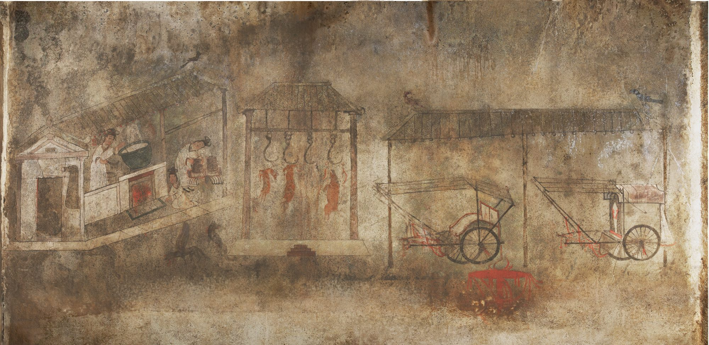
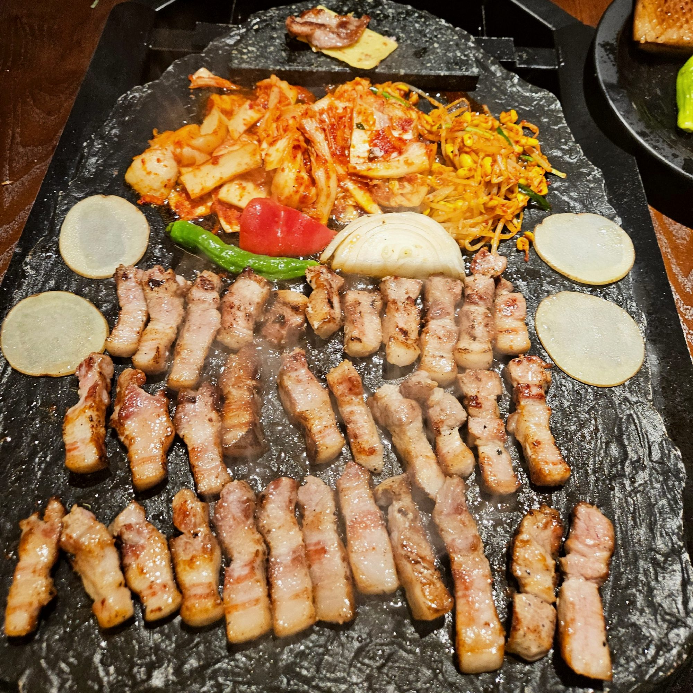
구이의 원형
고구려 안악3호분 부엌 벽화 · 357년 · 공개 도메인
전주식 오방쌈채 3,000원
삼겹살의 풍미를 살리고 돼지고기의 느끼함을 잡아주는 전주식 오방쌈채. 전통 오방색 쌈채소로 한 쌈을 쌉니다.
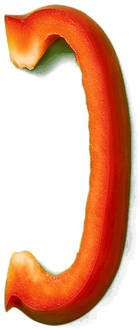
적파프리카·당근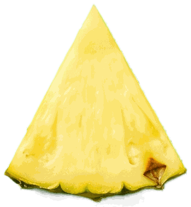
황파인애플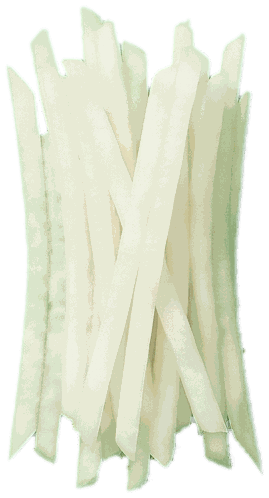
백무채·양파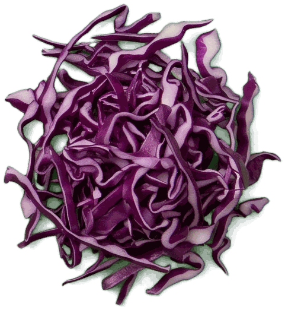
흑보라양배추전주는 맑은 물에서 자란 제철 식재료와 솜씨 좋은 손길로 빚은 밑반찬, 오방색과 전통주가 어우러져 오감을 만족시키는 풍요로운 미식의 고장입니다.
재료를 끌어 고기 위에 놓아 보세요재료를 누르면 쌈 위로 올라갑니다
오방쌈 완성오방쌈채 3,000원
주물판 → 참숯 → 돌판의 3단 마이야르 조리기술. 육즙·불향·식감의 조화를 위해 세 번 굽습니다.
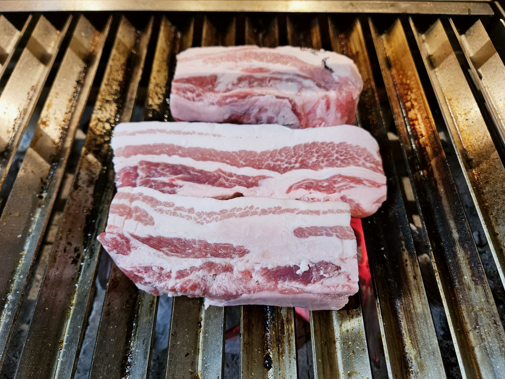
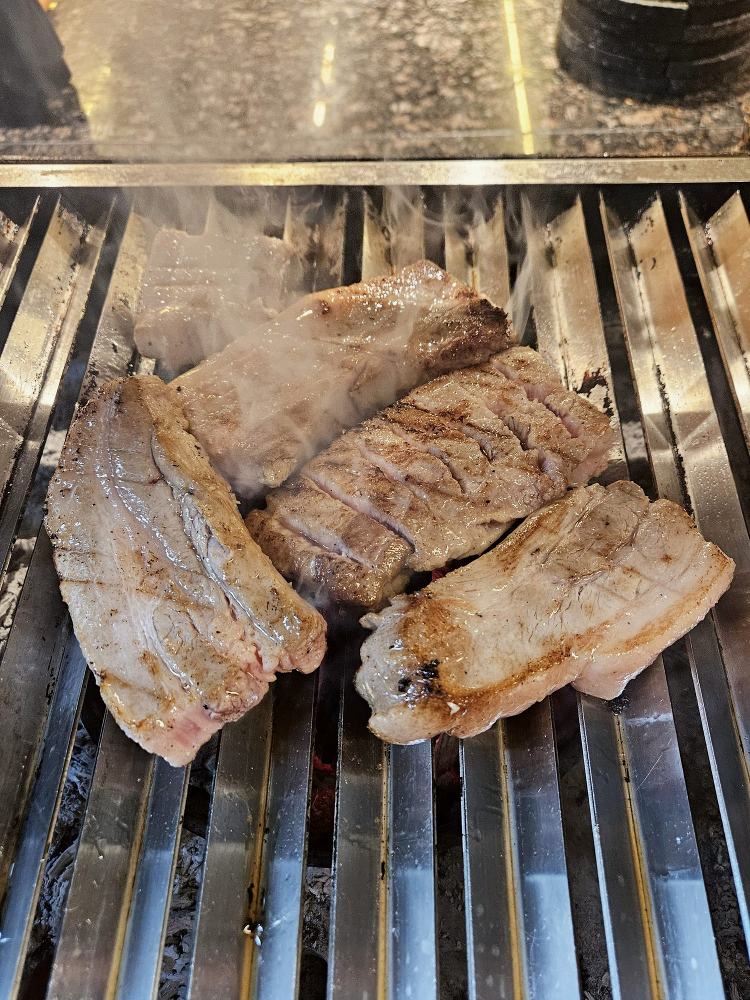
1 주물판 · 육즙
지역특산물로 만든 특제 된장소스를 발라 초벌합니다. 그릴에 초벌하는 모습은 바 형식의 라이브 키친에서 볼 수 있습니다.
2 참숯 · 불향
진짜 불맛을 찾기 위한 여정은 오로지 시간과의 싸움, 돼지구이 장인은 불맛을 설계하는 사람입니다. 온도와 시간을 정밀하게 다루는 손길로 굽습니다.
3 돌판 · 식감
원초성과 섬세함이 만나는 차별화된 조리 방식. 손님이 직접 굽지 않습니다 — 가장 맛있는 순간을 만들어드리는 직접 그릴링으로 손님을 맞이합니다.
붉은 노을 아래 하루의 무게를 내려놓는 자리, 고기 한 점과 술 한잔에 위로가 스미는 이 곳은 한국인의 사랑방입니다. 그 옛날 주막처럼, 정과 쉼이 고스란히 살아 있는 위로의 공간이고자 합니다.
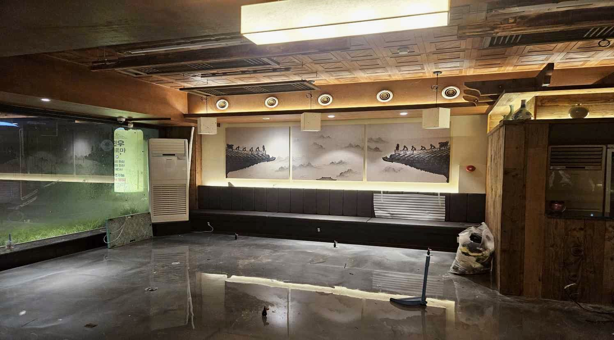
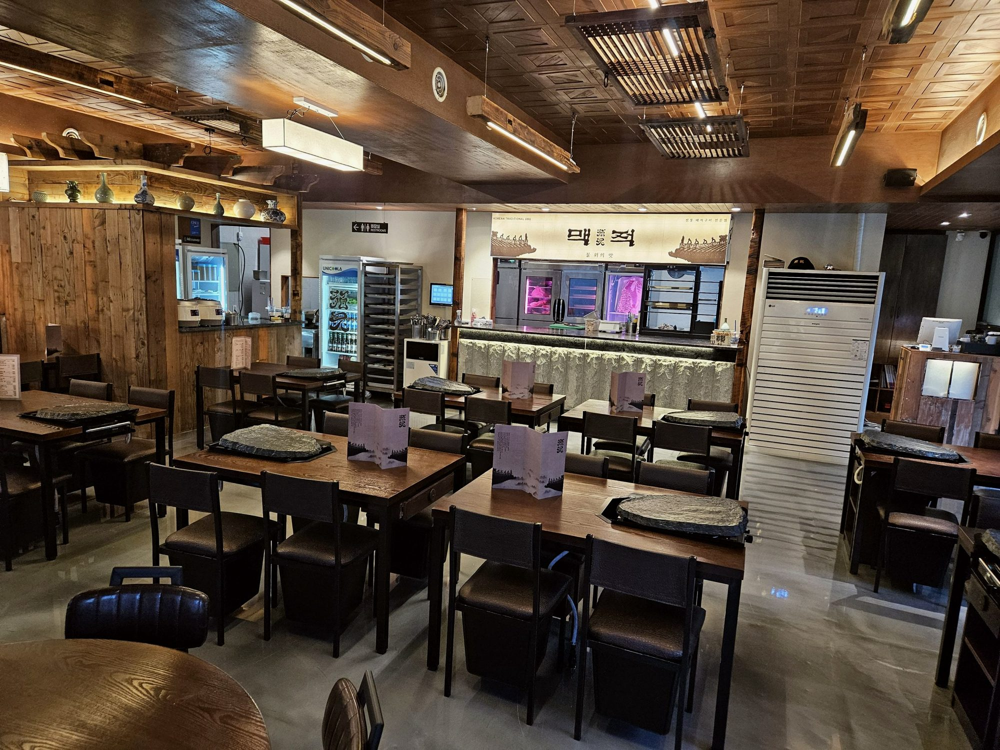
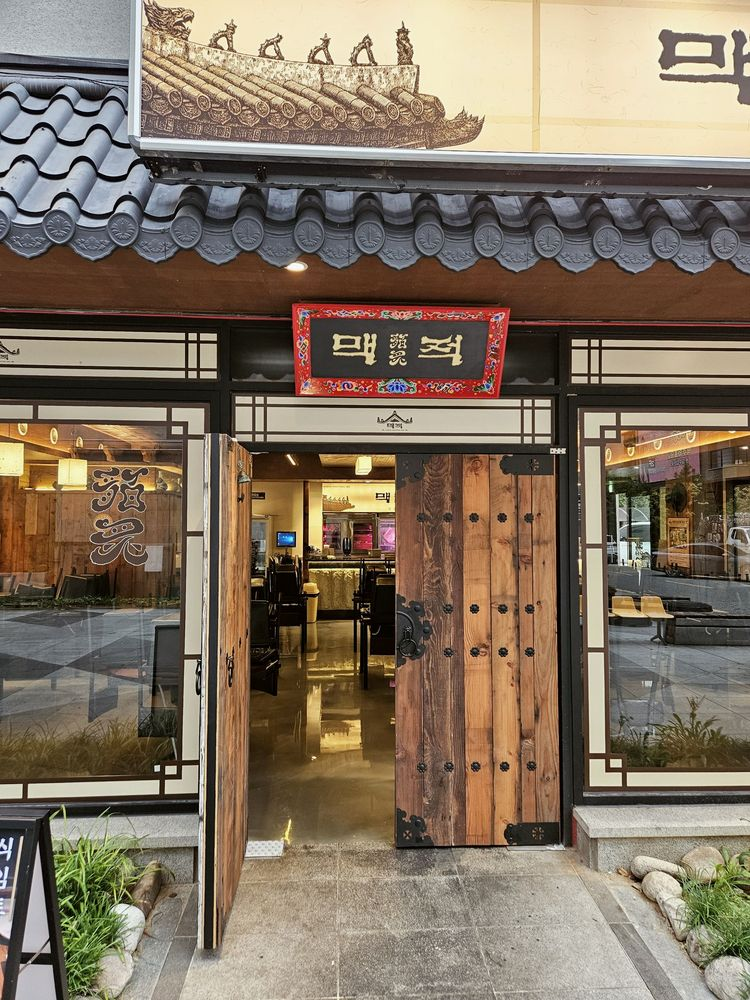
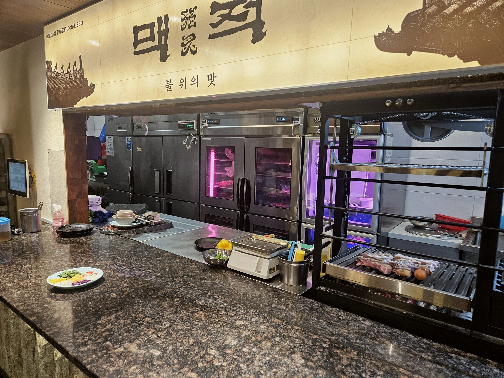
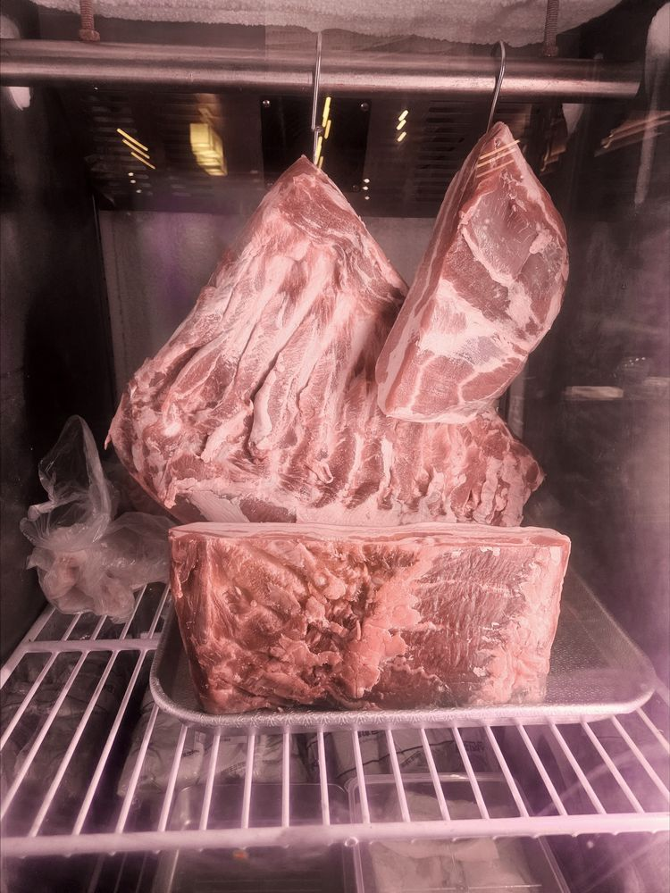
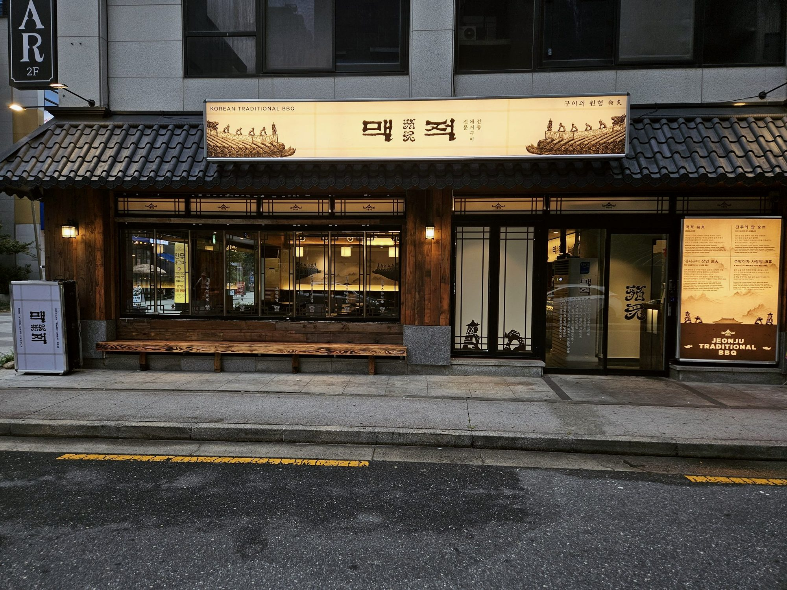
옆으로 끌어서 넘겨 보세요
전통돼지구이 「맥적」을 현대적으로 복원하고, 전주 지역 식문화 콘텐츠를 결합한 K-BBQ 브랜드입니다.
비전
전통의 품격과 현대의 감각을 잇는 전주 대표 고깃집, 세계가 주목하는 로컬 다이닝 경험
맥적(貊炙)은 고구려 고분벽화 속, 불 위에 고기를 올려 굽던 한국 고기구이의 원형에서 시작되었습니다.
그림: 안악3호분 부엌 벽화(357년), 공개 도메인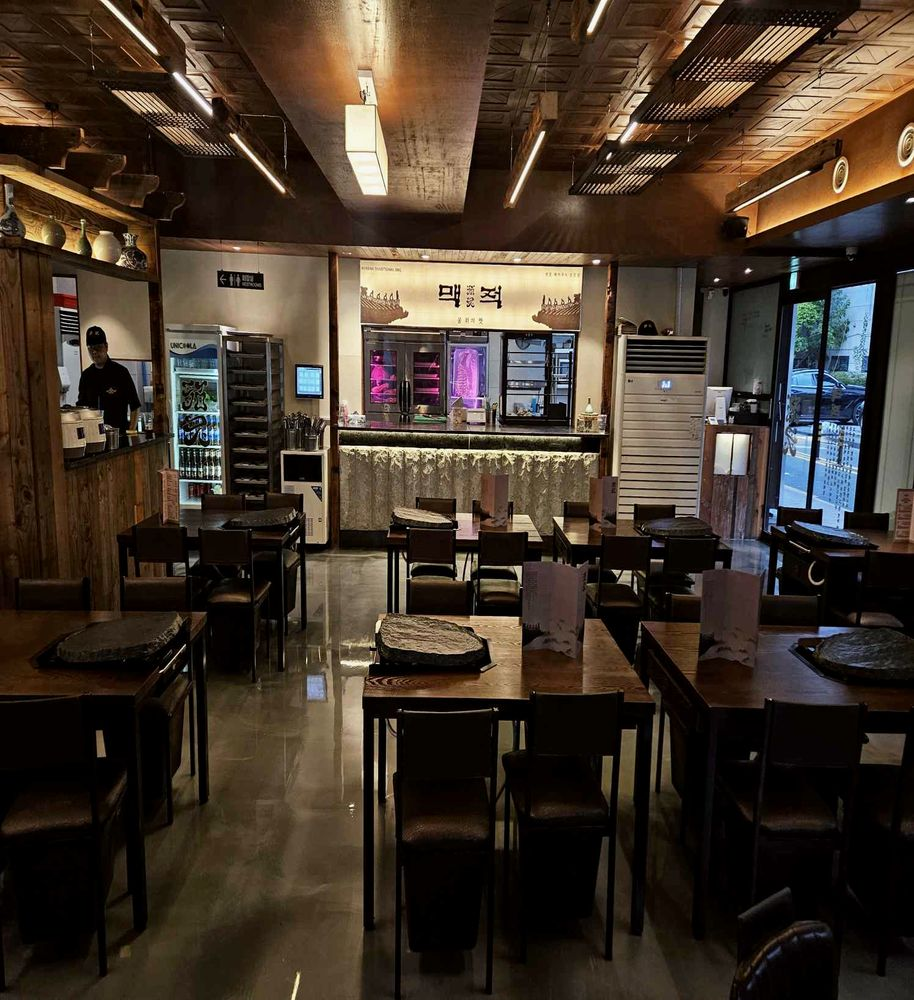
운영 중
맥적 전주본점 운영
준비 중
직영으로 검증한 모델을 가맹으로
준비 중
창호지목살·세겹살 15일 숙성·등심기왓살 정형, 고기+소스 BBQ 패키지
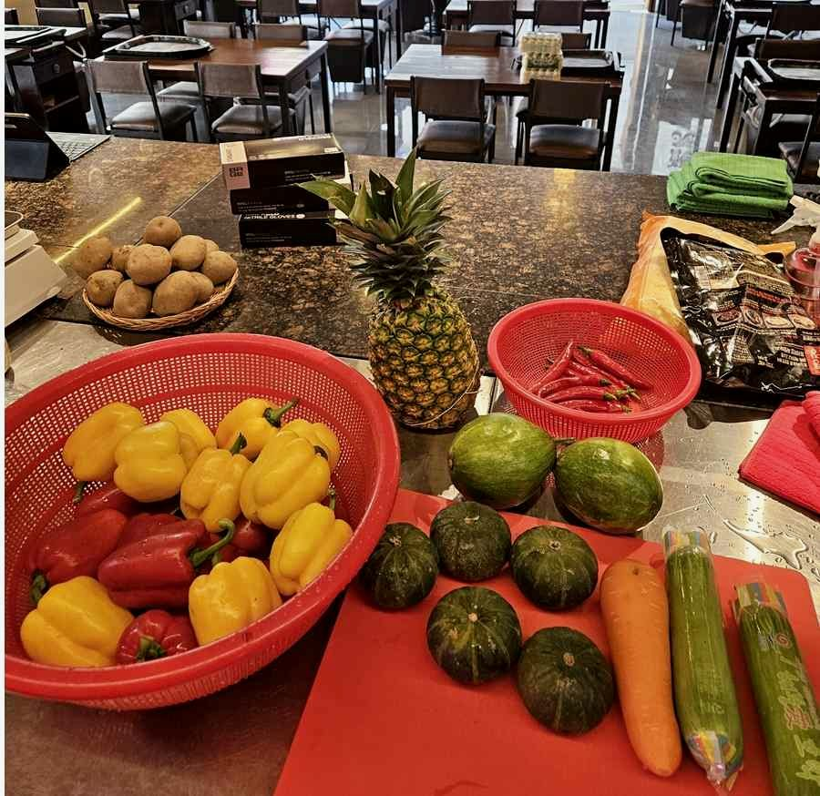
준비 중
전통장류로 만든 특제소스(마늘 육장·보리쌈장 등), 전주비빔볶음밥 소스·된장찌개 소스. 매장 상업용 주방에서 직접 제조
맥적은 고구려 시대부터 전해진 원초적 구이의 정신을 품고, 전주라는 역사와 문화의 도시에서 이를 현대적으로 재해석한 프리미엄 전통 BBQ 브랜드입니다.
가맹사업은 준비 중입니다. 직영으로 검증한 모델을 가맹으로 준비하고 있습니다. 창업 상담은 전화로 받습니다.
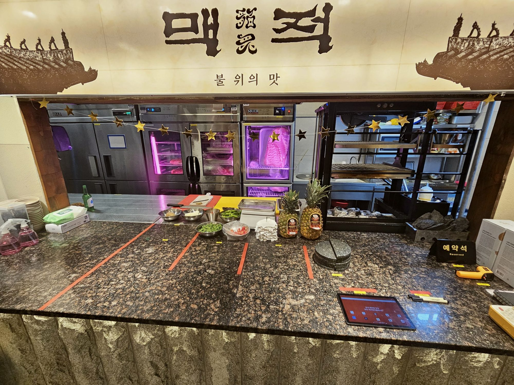
전북특별자치도 전주시 완산구 홍산북로 60-22 1층 101호 (효자동3가)
공휴일 17:00–04:00 · 라스트오더는 마감 1시간 전